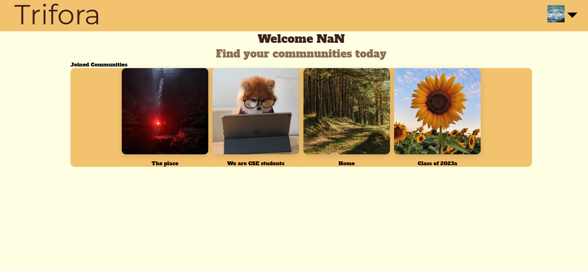
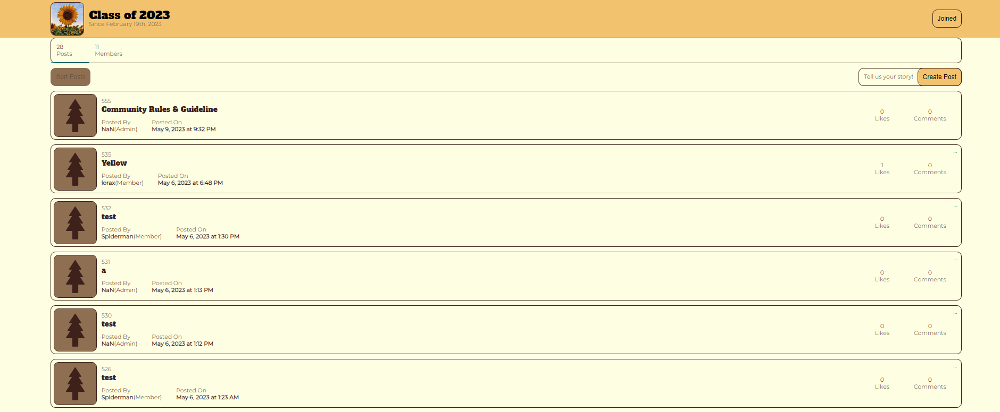
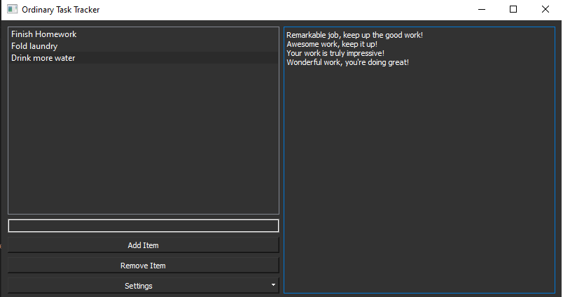

I'm currently a senior at the University at Buffalo, pursuing a Bachelor's degree in Computer Science. Born and raised in New York City, I've developed a passion for creating software, and in my spare time, I enjoy reading, playing games, and exploring different types of tea.
Trifora is a progressive web application inspired by Reddit, designed and developed with a team of 5 fellow computer science enthusiasts. This React-based application offers a platform where users can create communities, initiate posts, upvote content, and engage in conversations via comments. Collaboration was streamlined using Zenhub as a project management tool, enabling efficient task distribution, timely completion, and consistent achievement of project milestones. One of the defining features of our development process was regular usability testing, which provided critical insights to guide iterative enhancements. This user-centric approach helped us to align the application's functionality with user expectations and foster continual progress.
 Task management is far from ordinary with the Ordinary Task Tracker. Designed to bring a splash of fun and a wave of organization to your daily tasks, this application allows you to add and remove items to a customizable list. But that's not all - each addition triggers a unique message, tailored according to the settings you choose. Transforming the mundane into the extraordinary, the Ordinary Task Tracker brings a new level of interactivity to task management, turning each accomplishment into a celebration.
In the realm of web development and programming, terms and jargon can often get overwhelming. DefineMeNow is a Chrome extension I'm currently working on to address this challenge. With this tool, users can simply highlight a computer science term or any other phrase, and the extension will provide a handy definition and usage examples on the spot. Keep an eye on this space for updates on this exciting project!
Feel free to reach out to me!
Email: jaycheung321@gmail.com
LinkedIn: Jay Cheung
Click here to check out my GitHub!